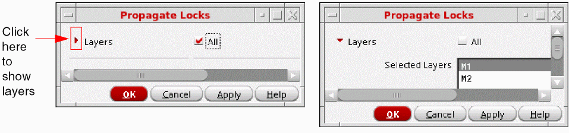

Propagating Locks
Lock propagation does the following:
- Color locked shapes are identified. Then, all the shapes connected to the locked shapes on the same layer are locked to the same color throughout the hierarchy, from the current to the bottom level.
- All shapes in critical nets that were pre-colored in schematic, as described in Net-Based Pre-Coloring Flow, will be locked to their current colors.
By default, lock propagation operates on all layers, but can be limited to specific layers.
-
Choose Propagate Locks in the Lock Colors drop-down list of the Multiple Patterning toolbar.
The Propagate Locks form appears.
 - (Optional) To propagate locks only on specific layers:
- Click OK or Apply.
You can also use the mptPropagateLocks SKILL function to propagate locks in the entire hierarchy.
For an overview of this feature, see Lock Propagation.
Return to top